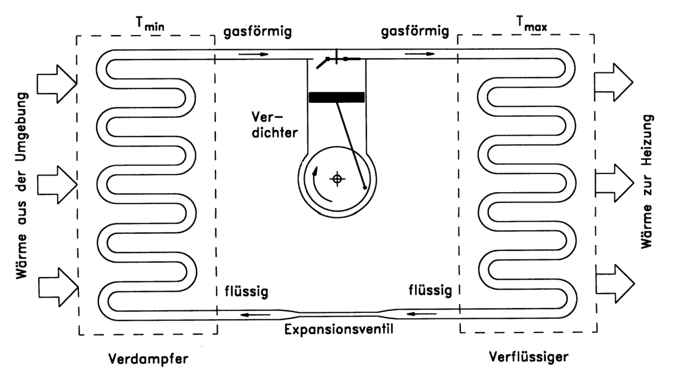
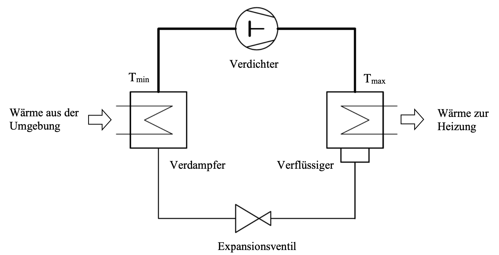

Wärmepumpe
Grundlagen
Nach dem 2$^{ten}$ Gesetz der Thermodynamik flieβt Wärme von warm nach kalt. Maschinen die die natürliche Wärmerichtung umdrehen heiβen: Wärmepumpen, es passiert als ein linksgäniger Kreisprozess.
Prinzip
In einer Wärmepumpe gibt es 2 Wärmereservoirs. Ein warmes mit der Temperatur $T_o$ und ein kaltes mit der Temperatur $T_u$. Zwischen den Wärmereservoirs ist ein mit einem Arbeitsgas gefüllten Arbeitszylinder. Der Arbeitszylinder kann mit den Wärmereservoirs in thermischem Kontakt sein.
Das Arbeitsgas im Arbeitszylinder wird adiabat expandiert, bis die seine Temperatur unter $T_u$ liegt. Dies führt dazu, dass nun Wärme vom kalten Reservoir an das noch kältere Arbeitsgas im Zylinder flieβt. Der thermische Kontakt löst sich und es wird eine Arbeit mit einem Kolbel auf das Gas verrichtet. Das Gas wird adiabat komprimiert bis seine Temperatur über $T_o$ liegt. Der Zylinder wird nun in thermischen Kontakt mit dem warmen Reservoir gebracht. Die Wärme flieβt vom wärmeren Arbeitsgas zum warmen Reservoir. Ab hier wiederhsolt sich der Prozess wieder.
Schematische Darstellung
Schaltplan
Leistungszahl
Die Leistungszahl $\varepsilon$ ist das Maβ für die
Effektivität
der Wärmepumpe.
Kosten
Bezahlt wird nur die Aufgewendete Arbeit $W_{auf}$ der Wärmepumpe. Die benötigte Energie $Q_{zu}$ wird der Umgebung entnommen und kostet somit nichts.
Formel
Da nach dem idealen Carnotprozess die Leistungszahl $\varepsilon = \frac{1}{\eta_c}$ ist gilt dem nach:
$$ \varepsilon = \frac{1}{\eta_c} = \frac{T_o}{T_o - T_u} $$Es gilt also, dass die Leistungszahl $\varepsilon$ mit steigender Temperaturdifferenz $\Delta T = T_o - T_u$ abnimmt. Die Wärmepumpe wird weniger effizient.
Reale Wärmepumpen
Um die Leistungszahl zu erhöhen, wird in realen Wärmepumpen eine Änderung des Aggregatzustandes des Arbeitsmittels bewirkt. Hier wird das Arbeitsmittel verdampft und wieder abgekühlt. Da bei
Funktionsweise
Einem kalten Reservoir zum Beispiel der Umgebung wird Wärme entzogen um
das flüssige Arbeitsmittel zu verdampfen. Dies geschieht bei der
Temperatur $T_u$. Im Verflüssiger wird nun der Druck so hoch erhöht,
dass das Arbeitsmittel wieder kondensiert. Es gibt dabei Wärme ab
sogenannte Kondensationswärme. Es hat nun die Temperatur $T_o$.
Das Arbeitsmittel soll nun bei niedriger Temperatur verdampfen und bei
hoher Temperatur kondensieren. Dafür müssen unterschiedliche Drücke
herrschen. Dieser Druck reguliert ein Verdichter der ebenfalls das
Arbeitsmittel durch die Rohre pumpt. Der Druckunterschied wird durch ein
Expansionsventil erhalten.
Leistungszahl
In der Praxis erreichen reale Wärmepumpen Leistungszahlen von: $\varepsilon = 2,5 ... 4,5$
Arbeitsmittel
Das Arbeitsmittel sind die Umweltschädlichen FCKW eine abkürzung für Fluorkohlenwasserstoffe. Sie sind umweltschädlich da sie die Ozonschicht zerstören und müssen daher fachgerecht entsorgt werden.
Einsatz
Wärmepumpen werden benutzt um zu Heizen. Um das zu bewirken müssen sie
groβe Wärmemengen aufnehmen. Das macht sie effektiver und man muss
weniger bezahlen. Deswegen werden die Rohrsysteme für Wärmepumpen tief
in den Erdboden eingegraben um sie von Frost zu schützen.
Die Wärme muss jedoch bei möglichst niedriger Temperatur abgegeben
werden. Das ist zum Beispiel der Fall bei Fuβbodenheizungen oder
ganz groβen Heizkörpern.
Da die Wärmepumpe gegenüber eisigen Temperaturen empfindlich ist, muss
oft ein konventionelles Heizsystem mit eingebaut sein man spricht dann
von: bivalenten Heizsystemen.
Wärmepumpen kommen oft zum einsatz, wo man die warme und kalte Seite der Wärmepumpe nutzen kann. Zum Beispiel in einem Kaufhaus in den Kühlräumen, wobei der Kühlraum gekühlt wird und der Rest des Kaufhauses geheizt wird.